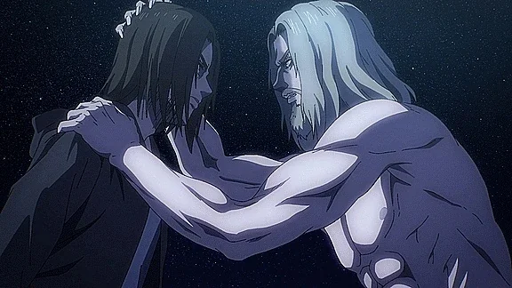
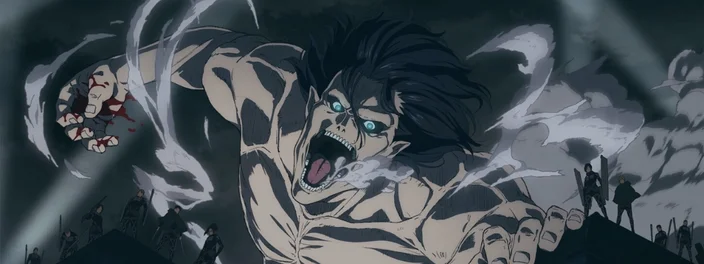

A primeira temporada nos apresentou a um mundo no qual a humanidade estava confinada atrás de enormes muralhas, sua existência ameaçada por criaturas gigantescas conhecidas como Titãs.

A quarta temporada nos levou além das muralhas, para Marley, onde os Eldianos eram oprimidos e usados como armas de guerra. Eren, agora mais maduro e cínico, iniciou um ataque surpresa no local, revelando-se como uma figura controversa com métodos questionáveis. A batalha de Liberio foi um ponto de virada, mostrando que os verdadeiros monstros podem não ser os Titãs, mas a própria humanidade.
À medida que o desfecho se aproxima, a temporada corrente sinaliza um final épico. No encontro no "Coordenadas", Eren e Zeke, os irmãos de sangue com destinos entrelaçados, confrontam-se em um domínio transcendental, no qual as linhas do tempo dos Titãs se encontram. Neste limiar, o jovem rejeita o plano do meio-irmão, desvelando suas verdadeiras ambições e lançando incertezas sobre suas intenções para o futuro dos Eldianos e o legado dos gigantes.
Lançado em 2013, Attack on Titan se tornou um verdadeiro fenômeno no mundo do entretenimento e um dos animes mais influentes dos últimos anos. Por isso, sua 4ª e última temporada, que foi dividida em três partes, têm sido muito celebrada e comentada pelos fãs.